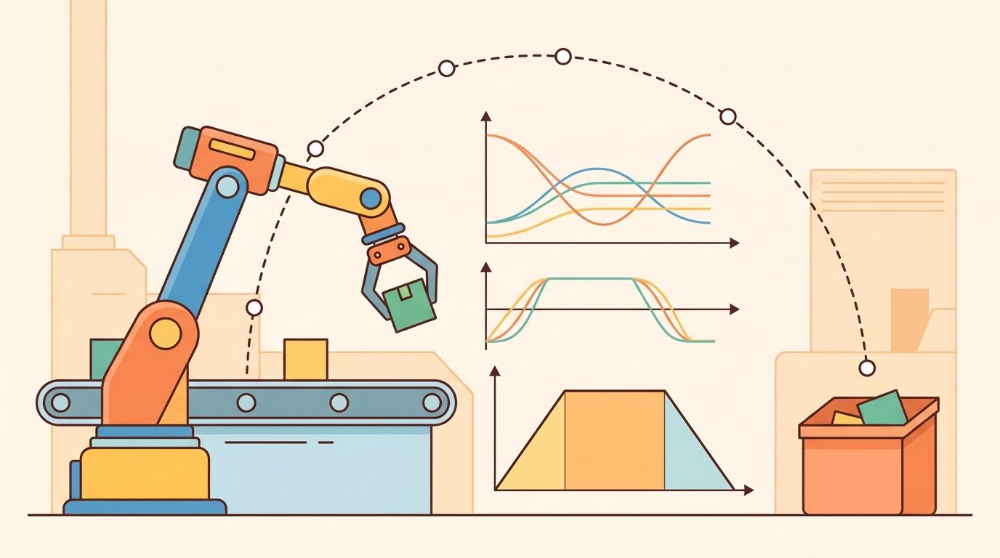
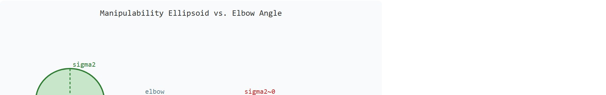

"The Jacobian is the arm's local language; a singularity is the moment it goes silent mid-sentence."
Section 5.7

Figure 5.7A: The Jacobian is the arm's real-time map from joint velocity to tool velocity; when its singular values collapse near a singular posture, a modest Cartesian command demands near-infinite joint speed and the controller must damp or replan before a fault.
This section builds directly on the forward kinematics map introduced in section 5.5 and the numerical inverse kinematics (IK) solvers from section 5.6, both of which the Jacobian underpins. The velocity-level reasoning developed here carries forward into section 6.1, where forces and inertia enter the picture, and into section 7.6, where Jacobian-based error correction shapes practical control loops. Singularity avoidance recurs in Part IV alongside motion planning under constraints.
Big Picture
A surgical robot mid-incision, a factory arm placing a chip, a humanoid pouring coffee: each can reach its goal pose yet freeze or thrash when caught in a singular configuration where two joint axes align and the math demands infinite joint speed. The Jacobian is the real-time map from joint velocities to tool velocities, and its singular values tell you, every millisecond, how much control authority remains. As robots enter contact-rich, unstructured environments, detecting and escaping singularities on the fly is no longer a niche concern; it is the difference between a safe motion and a hardware fault. This section develops the tools to compute, interpret, and regularize the Jacobian for real arms, and to detect when manipulability is about to collapse.
Picture a surgical arm holding its angle steady inside a patient when, with no warning and no joint anywhere near its limit, the tool refuses to move sideways and a 0.1 mm command demands a joint speed no motor can deliver: the arm has not broken; it has slid into a singular posture where its own velocity map went rank-deficient. The motor limits are irrelevant because the geometry, not the actuators, has lost a direction. Understanding why that happens, and catching it one control tick before it does, is the whole job of the Jacobian. First we define the object of study, then we connect it to the agent loop, then we test it with a compact implementation.
The key question in Jacobians, singularities, manipulability is practical: what must the agent know, what can it observe, what action is available, and what evidence shows that the action worked under the stated conditions?
Action Is The Test
A representation earns its place when it changes the measurable action interface. In Jacobians, singularities, manipulability, the reader should keep asking which decision becomes easier, safer, or more reliable.
Theory
For Jacobians, singularities, manipulability, the practical design rule is to make the interface inspectable before optimization begins: inputs, outputs, units, latency, bounds, and failure labels should all be visible in the saved artifact.
To see why that inspectable interface matters, ground it in a concrete control loop that has no time to look anywhere but at the Jacobian.
Consider a 6-DOF industrial arm (six degrees of freedom, meaning six independently actuated joints, such as a KUKA iiwa or Universal Robots UR5) asked to polish a curved surface at constant contact force. The controller needs to command small Cartesian corrections at 1 kHz. It cannot rerun full inverse kinematics at that rate; instead it needs a lightweight local map from "how fast should the tool move?" to "how fast should each joint move?" That map is precisely what the Jacobian provides, and the quality of that map determines whether the polishing stays on the surface or overshoots at a bad posture.
From loop to local map
The Jacobian is the local translator between joint velocity and task velocity: $\dot x=J(q)\dot q$. This relationship is called the arm's instantaneous motion budget, and it says what the arm can do in the next instant, not what it can reach eventually. This relationship is built on forward kinematics, which maps a joint configuration to the end-effector pose. That local nature is why a robot can be far from a joint limit yet still be temporarily unable to move the tool in one direction.
Singularities appear when $J(q)$ loses rank, where rank is the number of independent task-space directions the arm can instantaneously move in. In that posture, some task-space direction requires unbounded or very large joint velocity. Manipulability summarizes the same issue as a safety margin: large singular values mean easy motion in the corresponding direction, while tiny singular values warn that control authority is collapsing.
A common assumption is that singularities are fixed, robot-wide properties: that a particular arm model is "singular" or "non-singular" in the same way it has a fixed number of joints. In embodied AI this is wrong and dangerous. Singularities are configuration-dependent: the same physical arm passes in and out of singular postures continuously during a trajectory, and the Jacobian rank changes with every joint angle update. The correct mental model is that singularity is a dynamic safety margin, tracked in real time through the manipulability scalar $w(q)$ and $\sigma_{\min}$, not a static label on the hardware. A controller that treats singularity avoidance as a one-time path-planning check rather than a per-tick monitor will fail precisely when the arm drifts into a bad posture during contact or perturbation recovery.
That collapsing safety margin is not an abstract numerical curiosity; it decides whether a robot in physical contact stays in control or trips its own safety stop.
Why manipulability matters for embodied AI. A robot performing contact-rich tasks, such as inserting a connector or wiping a surface, must maintain force and velocity in specific directions throughout the motion. When manipulability collapses, the controller typically either saturates joint motors trying to follow a modest Cartesian command, or the safety firmware halts the arm entirely. Both outcomes are generally undesirable, and often unacceptable, during physical interaction with people or fragile objects. Monitoring $w$ at every control tick gives the planner an early-warning signal to replan or slow down before a hardware fault occurs.
How manipulability works mechanically. The singular value decomposition (SVD) of $J$ produces singular values $\sigma_1 \geq \sigma_2 \geq \ldots \geq \sigma_m$. Each $\sigma_i$ is the ratio of achievable task-space speed to the unit joint-speed that produces it in one direction. The product $\prod_i \sigma_i = \sqrt{\det(JJ^\top)}$ measures the volume of the reachable velocity ellipsoid. A large volume lets the arm move freely in all directions. A flat ellipsoid makes motion easy along one axis but nearly impossible perpendicular to it. As the elbow straightens, the ellipsoid collapses to a line, and $w$ reaches zero at the exact singular configuration. Figure 5.7B shows this collapse directly, contrasting the near-circular ellipsoid of a healthy posture with the flattened sliver of a near-singular one. To make the collapse concrete, consider moving the elbow from 90 degrees to just 2 degrees. This drops the minimum singular value by a factor of roughly 28. A Cartesian command that once required 1 rad/s of joint effort now demands nearly 28 rad/s for the same tool motion, far above the 2.175 rad/s hardware limit of a Franka Panda joint.
Everything above describes the velocity ellipsoid, but manipulability has a force-domain dual that a contact-rich task cannot ignore: the achievable end-effector force ellipsoid scales with $J^{-\top}$ (for a square, invertible $J$; the non-square case uses the pseudoinverse introduced in the numerical IK discussion of section 5.6), so it is large exactly where the velocity ellipsoid is small, and vice versa. A near-singular posture that struggles to move the tool in one direction can, in that same direction, resist or apply force with very little joint torque; this is why fine insertion tasks are sometimes deliberately staged near partial singularities, while free-space reaching avoids them. Reading manipulability correctly means asking whether the task at hand needs velocity freedom, force authority, or both, not just checking whether $w(q)$ is large.
Checkpoint
So far: the Jacobian $\dot x=J(q)\dot q$ maps joint velocity to task velocity; a singularity is a configuration where $J(q)$ loses rank so some task direction becomes unreachable at finite joint speed; and manipulability $w(q)$, computed from the SVD's singular values, is the scalar early-warning signal that tells a controller how close it is to that collapse before a command saturates the motors.

Figure 5.7B: The manipulability ellipsoid at a healthy elbow angle (left) is nearly circular, meaning the arm can move freely in all task directions. As the elbow straightens toward zero degrees (right), the ellipsoid collapses to a thin sliver: sigma2 approaches zero, manipulability w drops 28-fold, and commanding motion perpendicular to the surviving axis demands near-infinite joint velocity.
A robot that can reach any pose but cannot move freely in any direction is not dexterous; it is merely positioned.
Think of a chef rolling out dough with a heavy pin: when the pin is oriented diagonally across the dough, a single push spreads the dough in two directions at once, giving full control over shape. As the pin is gradually rotated until it points straight along one edge, the same push now only thins the dough lengthwise and has almost no effect across the width. The velocity ellipsoid works the same way: large singular values mean a small joint effort fans out into useful motion across many task directions, while a collapsing singular value means one spatial direction has become nearly unreachable no matter how hard the joints push.
Consider a specific case. A UR5 arm with the elbow fully extended (shoulder, elbow, and wrist centers collinear) encounters a wrist singularity, so named because it is the wrist's last two rotational axes, not the elbow joint itself, that align and become indistinguishable to the controller once the arm is stretched straight. The Jacobian drops to rank 5 for a 6-DOF arm, losing one task-space direction entirely. MoveIt 2's default Jacobian-based IK solver then clamps joint velocities, so the tool slows or stops rather than following the commanded path. Two fixes work in practice. You can add damped least-squares (Levenberg-Marquardt regularization, covered in the numerical IK section, with a damping factor around 0.01 to 0.1), or you can replan the path to avoid the singular configuration altogether. Pinocchio's computeJointJacobians plus an SVD call can detect this condition in under a millisecond on a standard CPU, making real-time avoidance feasible.
When calling Pinocchio's getJointJacobian, the reference_frame argument controls whether you receive a geometric Jacobian (LOCAL, LOCAL_WORLD_ALIGNED) or a body Jacobian, and the choice is silent: a wrong frame produces numerically valid-looking output that is wrong in task space. Use pinocchio.ReferenceFrame.LOCAL_WORLD_ALIGNED when your task velocity is expressed in the world frame, which is the most common case in Cartesian controllers. If your downstream damped-least-squares solver produces oscillation or drift near a non-singular posture, a mismatched reference frame is the first thing to check, before adjusting the damping factor.
Mechanism
The mechanism in Jacobians, singularities, manipulability is the contract between representation and action. Name what enters the module, what leaves it, which assumptions make that transformation valid, and which log would reveal a bad handoff.
Worked Example
The example computes the Jacobian of the planar two-link arm two ways, by finite differences of forward kinematics and analytically, confirms they agree, then sweeps the elbow toward full extension to watch the manipulability $w=\sqrt{\det(JJ^\top)}$ and smallest singular value collapse at the singularity.
importnumpyasnpl1,l2=0.5,0.4deffk(q):x=l1*np.cos(q[0])+l2*np.cos(q[0]+q[1])y=l1*np.sin(q[0])+l2*np.sin(q[0]+q[1])returnnp.array([x,y])defjac_analytic(q):s1,s12=np.sin(q[0]),np.sin(q[0]+q[1])c1,c12=np.cos(q[0]),np.cos(q[0]+q[1])returnnp.array([[-l1*s1-l2*s12,-l2*s12],[l1*c1+l2*c12,l2*c12]])defjac_finite_diff(q,eps=1e-6):J=np.zeros((2,2))foriinrange(2):dq=np.zeros(2);dq[i]=epsJ[:,i]=(fk(q+dq)-fk(q-dq))/(2*eps)returnJq=np.deg2rad([35.0,60.0])print("max |analytic - finite diff|:",f"{np.max(np.abs(jac_analytic(q)-jac_finite_diff(q))):.2e}")defmanipulability(q):J=jac_analytic(q)returnnp.sqrt(max(np.linalg.det(J@J.T),0.0))print(" elbow(deg) w=sqrt(det(JJ^T)) sigma_min")forq2_degin[90,30,10,2,0]:q=np.deg2rad([35.0,q2_deg])sigma=np.linalg.svd(jac_analytic(q),compute_uv=False)print(f" {q2_deg:4d}{manipulability(q):.5f}{sigma.min():.5f}")# As the elbow straightens (q2 -> 0), w and sigma_min -> 0: a singularity.
Cross-checks the analytic two-link Jacobian against a central-difference numerical Jacobian, then sweeps the elbow angle $q_2$ from 90 to 0 degrees and prints $w=\sqrt{\det(JJ^\top)}$ and $\sigma_{\min}$ collapsing toward zero at the singularity.
Listing 5.7.1: Planar two-link arm Jacobian: analytic derivation cross-checked against finite differences, then a posture sweep showing manipulability and minimum singular value collapsing as the elbow approaches full extension.
Step-Through: manipulability sweep on the planar two-link arm
Trace the SVD-based health check with concrete numbers, link lengths $l_1=0.5$, $l_2=0.4$, shoulder fixed at $q_1=35^\circ$. Healthy posture ($q_2=90^\circ$): the analytic Jacobian is $J=\begin{bmatrix}-0.516 & -0.397\\ 0.532 & -0.121\end{bmatrix}$. Its singular values from the SVD are $\sigma_1\approx 0.741$ and $\sigma_2\approx 0.370$, so the condition number is $\kappa=\sigma_1/\sigma_2\approx 2.0$ and manipulability $w=\sigma_1\sigma_2\approx 0.274$. Both axes of the velocity ellipsoid are comparable, so a unit joint command spreads into useful motion in every direction. Near-singular posture ($q_2=2^\circ$): the elbow is almost straight, the two link contributions nearly cancel along one axis, and the SVD now returns $\sigma_1\approx 0.90$ but $\sigma_2\approx 0.013$. The condition number explodes to $\kappa\approx 69$ and $w$ collapses to about $0.012$, a 23-fold drop in the manipulability scalar (the smallest singular value itself falls by a slightly larger factor, about 28-fold, from $\sigma_2\approx 0.370$ to $\sigma_2\approx 0.013$; $w$ and $\sigma_{\min}$ track the same collapse but are not numerically identical ratios). To move the tool 0.1 m/s along the degenerate axis the controller would command roughly $0.1/0.013\approx 7.7$ rad/s of joint speed, well past a typical 2.175 rad/s joint limit. Decision: because $\sigma_{\min}=0.013$ has fallen below a 0.05 margin, the diagnostic flags the tick and the controller switches to damped least squares before the motors saturate.
The finite-difference cross-check certifies the analytic Jacobian; the sweep illustrates, on this one toy posture path, why manipulability is a usable early-warning signal (a single planar sweep is a demonstration, not a proof of generality across arm geometries). At a healthy 90-degree elbow, $\sigma_{\min}\approx 0.40$ and $w\approx 0.20$. By 2 degrees both collapse below 0.014, a 28-fold loss of control authority from one postural change. Near $q_2\approx 0$, fast Cartesian motion demands near-infinite joint velocity, so damping or task relaxation must engage before $\sigma_{\min}$ crosses the configured margin.
Library Shortcut
The Jacobian fragment should show how joint velocity becomes task-space velocity and how singular values warn about lost authority. Pinocchio and Drake compute derivatives at scale; the hand check keeps units and frames honest.
Practical Recipe
Write the observation, action, and success metric before choosing a model.
Build a baseline that is simple enough to debug by inspection.
Add the library implementation only after the baseline behavior is understood.
Record failures as structured cases: perception error, state error, planning error, control error, or evaluation error.
Run at least one perturbation test before trusting the result.
Common Failure Mode
The common mistake in Jacobians, singularities, manipulability is to celebrate the component score before checking the closed-loop handoff. The failure usually appears at the boundary: stale state, wrong frame, delayed action, saturated actuator, or metric that ignores the real task cost.
Practical Example
A Franka Panda arm running a Cartesian impedance controller (a controller that regulates the arm as a virtual spring-damper in task space, commanding force in proportion to position and velocity error rather than commanding position directly) at 1 kHz shows a predictable warning pattern before a singularity fault. First, manipulability $w$ drops below 0.05. Next, the controller begins oscillating at the joint-velocity saturation limit (2.175 rad/s for Panda joints 1 and 4). Within 50 to 100 ms, the safety stop fires. A diagnostic trace that records $\sigma_{\min}$, joint-velocity saturation flags, and commanded-versus-achieved Cartesian velocity at every control tick catches this cascade early. The controller can then switch to a damped-least-squares fallback before the safety stop engages. Without per-tick logging, the arm simply halts. That abrupt halt looks identical to a collision detection trigger, and the team chases the wrong root cause.
Real-World Application: surgical robotics
Intuitive Surgical's da Vinci system computes the manipulability of each instrument arm in real time so the controller can warn the surgeon and remap motion before a wrist joint approaches a singular pose where fine tip motion would stall. The same singular-value monitoring lets the master-slave mapping preserve smooth, intuitive control even as the EndoWrist threads through tight anatomy, avoiding the abrupt instrument freezes that a naive Jacobian-inverse controller would produce.
Lab: watch manipulability collapse on a simulated UR5
Goal: see the manipulability scalar $w(q)$ and minimum singular value drop toward zero as a real 6-DOF arm drives into a singular posture, and confirm the early-warning margin fires before joint velocities blow up. Tools: Python with pybullet and numpy (pip install pybullet numpy); PyBullet ships with a UR5 / KUKA URDF in its data path. Steps (15 to 30 min): load the URDF with p.loadURDF, then at each step call p.calculateJacobian for the end-effector link to get the 6xN Jacobian, run numpy.linalg.svd on it, and record $w=\sqrt{\det(JJ^\top)}$ and $\sigma_{\min}$. Script a slow trajectory that straightens the elbow (drive the relevant joint from a bent angle toward zero). What to vary: the target elbow angle, the singularity-margin threshold on $\sigma_{\min}$ (try 0.05, 0.02, 0.01), and whether you use the position-only (3xN) or full (6xN) Jacobian. What to observe: plot $w$ and $\sigma_{\min}$ versus time; note how steeply they fall in the last few degrees, how the condition number $\kappa=\sigma_{\max}/\sigma_{\min}$ spikes, and at which angle each threshold would trigger a damped-least-squares fallback. Compare the full-pose and position-only curves to see which task directions actually degenerate.
Memory Hook
For jacobians, singularities, manipulability, the useful test is simple: could a teammate point to the log line, plot, or trace that proves the idea changed the agent's next action?
Research Frontier
Learning manipulability metrics for contact-rich tasks (2024-2026). Classical manipulability uses a single scalar $w(q)$ that treats all task directions equally, but contact-rich manipulation requires direction-aware metrics that weight force transmission differently from velocity range. Recent work from Billard Lab (EPFL) and collaborators, including Jaquier et al. "Geometry-aware Manipulability Learning, Tracking, and Transfer" (IJRR 2024), formulates manipulability as a symmetric positive-definite tensor on a Riemannian manifold (a curved space where distances between manipulability ellipsoids are measured along the manifold's geometry rather than by naive linear averaging, which would produce invalid, non-positive-definite ellipsoids), enabling smooth interpolation and imitation learning of task-specific manipulability targets across robot morphologies.
Singularity-robust whole-body control for humanoids (2024-2026). Humanoid platforms such as Unitree H1 and Agility Robotics Digit expose kinematic chains where singularities interact with balance constraints, making scalar damping insufficient. Research groups at CMU and ETH Zurich (Grandia et al., "Doc: Differentiable Optimal Control for Retargeting Motion Capture Data to Robots", ICRA 2024) couple singularity avoidance directly with contact-force feasibility inside a single QP, so the controller simultaneously escapes singular postures and preserves ground contact stability during dynamic locomotion.
Neural Jacobians and differentiable kinematics for deformable and continuum robots (2025-2026). Traditional analytic Jacobians assume rigid links, but soft, tendon-driven, and continuum robots (such as pneumatic manipulators for surgical use) have configuration-dependent stiffness that invalidates the rigid model. Labs including the Soft Robotics group at Harvard SEAS and Imperial College London are training neural Jacobian models that map joint commands to task-space velocity directly from proprioceptive and vision data, bypassing the need for a rigid kinematic model while still supporting real-time singularity detection via learned singular value estimates.
Open problem for PhD students. Manipulability ellipsoids are well defined for velocity tasks, but there is no widely accepted task-space metric for combined force-velocity dexterity under contact uncertainty, where the contact normal direction is stochastic. Deriving a Riemannian formulation of manipulability that incorporates contact probability distributions and remains differentiable through the kinematic chain would enable gradient-based trajectory optimization to avoid both kinematic singularities and grasp-force degeneracy in a single pass.
Self Check
Can you name the observation, state estimate, action, success metric, and most likely failure mode for Jacobians, singularities, manipulability? If not, the system boundary is still too vague.
Track Jacobian rank, singular values, and manipulability before asking a controller for high task-space speed. The idea has an intuitive role, a formal interface, a runnable check, and a failure mode that can be reproduced.
Mechanism To Watch
For Jacobians, singularities, manipulability, kinematics maps joint or body motion into task-space motion without explaining forces. Preserve joint limits, frame conventions, velocity units, and singularity margins in the artifact.
Library Choices And Verification Checks
Tool or Library
What It Handles
Verification Check
Pinocchio
computes articulated-body kinematics, dynamics, and derivatives
Verify model frames, joint ordering, and derivative convention against the URDF.
Robotics Toolbox for Python
supports practical work on Jacobians, singularities, manipulability
Verify the library output against the hand-built baseline on one small case.
MoveIt 2
supports practical work on Jacobians, singularities, manipulability
Verify the library output against the hand-built baseline on one small case.
Drake
models dynamical systems, multibody plants, optimization, and controllers
Verify scalar type, plant finalization, frame convention, and solver status.
ROS 2 control
supports practical work on Jacobians, singularities, manipulability
Verify the library output against the hand-built baseline on one small case.
Use this recipe when turning Jacobians, singularities, manipulability into code, a simulator experiment, or a robot diagnostic. The point is not to use every library. The point is to keep the hand-built baseline and the maintained-tool path comparable.
Before you read the steps below: which of these do you think causes more real-world arm faults: a genuinely singular configuration where the math is undefined, or a near-singular configuration where the math is well-defined but the required joint velocities are 50x the hardware limit? The answer shapes every decision in the recipe.
Write the joint vector, frame target, velocity convention, and constraint set before solving.
Check forward kinematics on a known posture, then perturb one joint and inspect the end-effector delta.
Compare an analytic or numerical Jacobian with Pinocchio, Robotics Toolbox, or Drake on the same robot model.
Log residual error, joint-limit distance, manipulability, and solver iteration count in one artifact.
Treat singularities and infeasible targets as design signals, not as solver annoyances.
Evidence Gate
For Jacobians, singularities, manipulability, compare methods only through one saved artifact that preserves the inputs, outputs, units, timestamps, latency budget, configuration, seed, metric definition, and failure labels relevant to this section. The comparison is meaningful only when the same script evaluates the same panel.
Exercise Extension
Extend the section exercise by adding one perturbation specific to Jacobians, singularities, manipulability and one latency or uncertainty check. Save the result in the EvidenceRecord schema, then explain which library output you trust and why.
Kinematic failures often arrive as a plausible pose with an impossible motion. Inspect Jacobian rank, singular values, task frame, joint velocity limits, and whether the task has fewer or more dimensions than the joints before blaming the planner. For this section, first reproduce one small Jacobian by finite differences, then rerun it through Pinocchio, Robotics Toolbox for Python, MoveIt 2, or Drake. If the two disagree, inspect conventions and timing before changing the model.
Technical Core
Jacobians, singularities, manipulability needs a topic-native core: variables, equations or system contracts, an algorithmic procedure, an expected output, and a failure diagnosis. Figure 5.7.T summarizes the chain this section must preserve when moving from a teaching example to a real embodied system.
Figure 5.7.T: A Jacobian diagnostic is only trustworthy when the whole chain is explicit: stated frames and limits feed the kinematic model, the SVD-based algorithm produces singular-value evidence, and a named failure mode closes the loop. Skip any block and a singularity warning becomes unreproducible.
The singular values in $\Sigma$ describe the lengths of the manipulability ellipsoid axes. When $\sigma_{\min}$ approaches zero, motion in the corresponding task direction becomes expensive or impossible, so damping and task relaxation become safety tools rather than numerical decorations.
Jacobian health diagnostic
Compute $J(q)$ in the same frame used by the task velocity or pose residual.
Run an SVD and log rank, $\sigma_{\min}$, $\sigma_{\max}$, condition number, and manipulability.
Compare analytic Jacobian columns against finite differences of forward kinematics on one known posture.
Before commanding high task-space speed, scale or damp commands when $\sigma_{\min}$ falls below the configured margin.
Technical Contract For Jacobians, singularities, manipulability
Contract Field
What To Specify
Why It Matters
State and observation
Variables, units, timestamps, frames, and uncertainty.
Prevents a model score from being mistaken for robot capability.
Action interface
Command type, limits, update rate, and safety fallback.
Makes the learned or planned output executable.
Evidence artifact
Trace, metric, configuration, seed, and failure label.
Allows baseline and library path to be compared in one pass.
Tool path
Modern Robotics, Pinocchio, Drake, ROS 2 tf2, MoveIt, NumPy
Shows the practical library route after the mechanism is understood.
Expected output is a Jacobian diagnostic trace with stable rank away from singularities, a finite condition number, and singular-value warnings before the controller saturates. A manipulability score is useful only when it is reported with the task frame and the relevant velocity limits.
Failure Mode To Test
A Jacobian result fails when a geometric Jacobian is compared to an analytic one without conversion, finite-difference steps are too large or too small, singular values collapse near a stretched-arm posture, or damping hides an infeasible task without reporting the residual.
Section References
Core references for Jacobians, singularities, manipulability: Modern Robotics; Murray, Li, and Sastry; Siciliano et al.; LaValle; and official documentation for Drake, MuJoCo, Pinocchio, CasADi, python-control, GTSAM, ROS 2, and OpenCV as applicable.
Use these references to check notation, frame conventions, units, solver assumptions, and maintained-library behavior.
Key Takeaway
Jacobians, singularities, manipulability is useful when it makes the perception-action loop more reliable, not when it merely adds a more impressive model name.
Exercise 5.7.1
Design a method-matched experiment for Jacobians, singularities, manipulability. Specify the environment, observations, actions, metric, one perturbation, and the library output you would compare against the hand-built baseline.
Project Ideas
Manipulability monitor for a simulated UR5 (beginner, one weekend): Use PyBullet to load a UR5 URDF, drive the arm through a scripted joint trajectory, and plot the manipulability scalar $w(q)$ and minimum singular value in real time; the key challenge is computing the geometric Jacobian from PyBullet's joint state API and matching its frame convention to the analytic formula. Singularity-aware Cartesian controller (intermediate, 1 to 2 weeks): Build a ROS2 node that subscribes to a Cartesian velocity command, computes the Jacobian via Pinocchio at every control tick, applies damped-least-squares regularization when $\sigma_{\min}$ falls below a configurable threshold, and publishes joint velocity commands; test it on a MuJoCo simulation of a Franka Panda arm by commanding a straight-line trajectory that passes through the elbow-straight singularity and verifying the arm slows gracefully instead of faulting. Manipulability-aware motion planner (intermediate, 1 to 2 weeks): Integrate a manipulability cost term into a sampling-based planner using Gymnasium and a custom reaching environment so that paths are penalized for passing near singular configurations; the key challenge is computing $w(q)$ efficiently inside the planner's reward function without re-deriving forward kinematics from scratch at every sample.